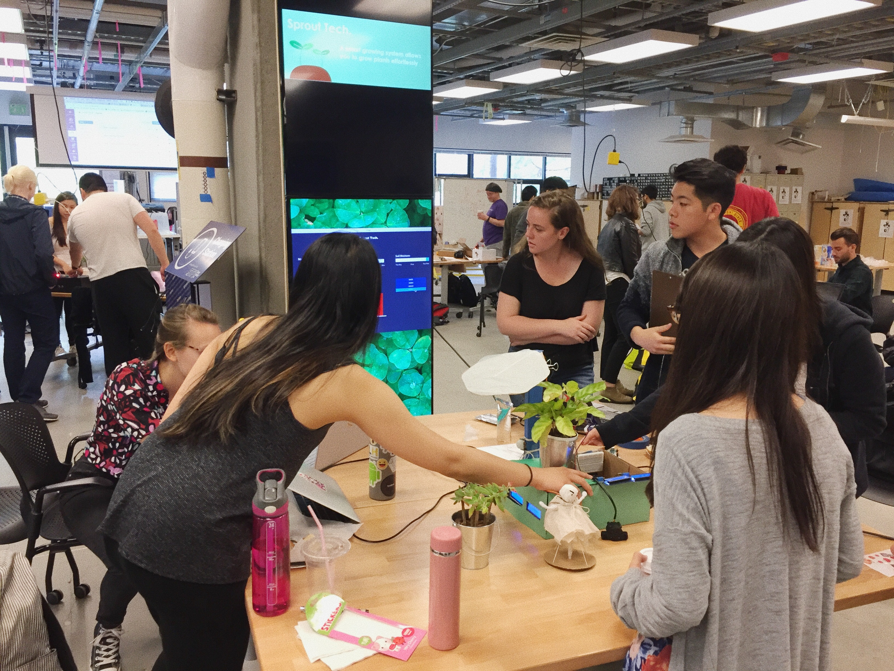
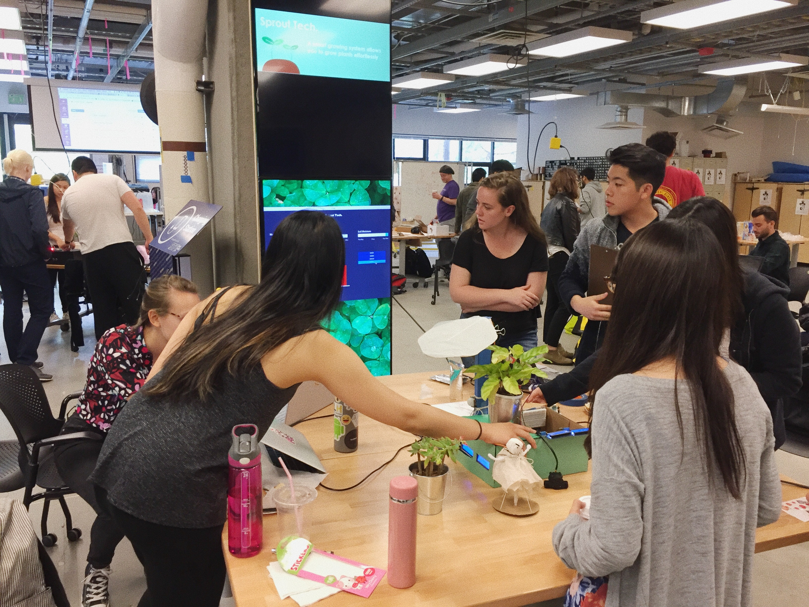

MUM // 05.08.2018
I've been a part of this directed research group called Maintaining the Menstruating Body for about a year, and currently, we are designing Museum of Menstruation (MUM). So far, we've communicated with our client to understand their visions, goal, and requirements they have for this project.
This week, we sketched out our the layout of the museum.
This week, we sketched out our the layout of the museum.

Based on the idea we came up with as a group, we drew a 3D map. This illustration is for us to communicate our idea to the client easier.

Currently, we are creating detailed illustration of various parts of the museum. This project is working in progress. I will be updating our progress here.
CHI 2018 // 04.30.2018
This past week, I attended the 2018 annual ACM CHI Conference on Human Factors in Computing Systems, which was held in Montreal, Canada. Our project called Menstrual Maze: A Toy Exploring Public Engagement in Menstrual Health Education was accepted into the Student Design Competition– and so, we were given the opportunity to present it at the conference!

Here is the group photo of HCDE undergrads attending CHI this year! We explored Montreal together and ate poutine a countless number of times, of course.

Look at this amazing stringy cheese!

Sprout // 03.10.2017
Sprout is a piece I made for my physical computing class with few other classmates. It is a system that senses the environmental conditions of a garden, and based on the condition, it automatically waters or provide shades for plants.
 

This is what it looks like inside of the box. We used total of 4 Arduino and 4 sensors (Temperature sensor, Photocell, Soil moisture sensor, and Liquid flow meter).
CHI 2017 // 05.13.2017
I attended the 2017 annual ACM CHI Conference on Human Factors in Computing Systems with my teammates to present our project, Self-Transcendence Through Solo-Travel, which was accepted into the Student Research Competition.